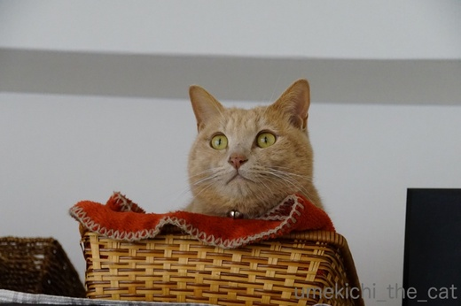
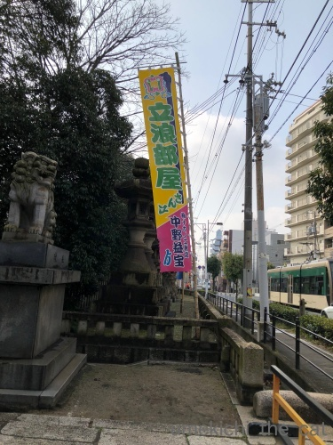
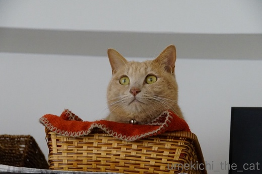
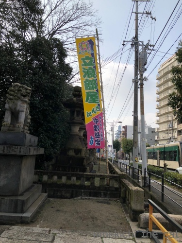

春が来た？ [梅吉]
オリンピックに夢中になっているうちに急に春めいて来た我が家地方です＾＾

![[猫]](https://blog.ss-blog.jp/_images_e/101.gif) せや！わしには はるがみえるで！！
せや！わしには はるがみえるで！！
と言っているのかは分かりませんがお外を気にする時間が長くなって来ました。
寒い時には行きたがらなかったベランダにも積極的に出て行きますよー＾＾
そして抜け毛も激しくなって来ました。
ちょっと抱っこしただけで衣類は毛だらけ！
早くも換毛期のようです。
お鼻でも春を感じているのでしょうか。ひくひくひくひく・・・・・
（12秒です）
本当のところはニンゲンのお夕食の匂いに反応しているところです (^▽^;)
街路の沈丁花の香りが漂ってくるまでもう一歩。
そして我が家の近くには春を告げるこの「のぼり」がたちました！

お相撲さんキター！！
でも今年は大阪場所のチケット取れませんでした・・・
色々あったゴタゴタでかえって注目を集めたのかな？
･゜ﾟ･*:.｡..｡.:*･゜ﾟ･*:.｡. .｡.:*･゜ﾟ･*･゜ﾟ･*:.｡..｡.:*･゜ﾟ･*:.｡..｡.:*･゜ﾟ･*
オリンピック終わっちゃいましたね。
我が家にしては連日夜更かしをして熱心に見ていたので
軽くオリンピックロス状態です。
次は２年後！！
東京オリンピックは空席の目立つ会場・・・なんてのは
無しにしたいですねー。
 ↑ガブッと一押し↑
↑ガブッと一押し↑
ネットで見つけたこの画像。
笑っちゃいましたー！
ポン菓子とかりんとうが出会うとこうなる・・・
ソースはこちら
食べるのにちょっと覚悟がいりそうですwww

と言っているのかは分かりませんがお外を気にする時間が長くなって来ました。
寒い時には行きたがらなかったベランダにも積極的に出て行きますよー＾＾
そして抜け毛も激しくなって来ました。
ちょっと抱っこしただけで衣類は毛だらけ！
早くも換毛期のようです。
お鼻でも春を感じているのでしょうか。ひくひくひくひく・・・・・
（12秒です）
本当のところはニンゲンのお夕食の匂いに反応しているところです (^▽^;)
街路の沈丁花の香りが漂ってくるまでもう一歩。
そして我が家の近くには春を告げるこの「のぼり」がたちました！

お相撲さんキター！！
でも今年は大阪場所のチケット取れませんでした・・・
色々あったゴタゴタでかえって注目を集めたのかな？
･゜ﾟ･*:.｡..｡.:*･゜ﾟ･*:.｡. .｡.:*･゜ﾟ･*･゜ﾟ･*:.｡..｡.:*･゜ﾟ･*:.｡..｡.:*･゜ﾟ･*
オリンピック終わっちゃいましたね。
我が家にしては連日夜更かしをして熱心に見ていたので
軽くオリンピックロス状態です。
次は２年後！！
東京オリンピックは空席の目立つ会場・・・なんてのは
無しにしたいですねー。
ネットで見つけたこの画像。
笑っちゃいましたー！
ポン菓子とかりんとうが出会うとこうなる・・・
ソースはこちら
食べるのにちょっと覚悟がいりそうですwww

カフェオレ色の梅吉

梅吉 2023年8月10日 永眠


梅吉と出会った譲渡会

犬猫の理由なき殺処分ゼロ
妄想広告
UMEKICHI 光

爆発的に早い！
時々攻撃的！
Thanks to Mr.Boss365
爆発的に早い！
時々攻撃的！
Thanks to Mr.Boss365

梅吉君春のにおいを感じてるのかと思ったら、夕食のにおいでしたか(*^_^*)
でも、春のにおいってありますよね。
ポン菓子とかりんとうの出会い・・・これ最高ですね。絶対これやる！やって子どもたちに見せてやろうっと(^o^)丿
by palpal (2018-02-26 15:46)
ぷぷぷっ、お鼻ヒクヒクかわいいですね～(^▽^;)
ウチのも春先は心騒ぐようで窓を開けろとうるさいです。
あま～い鬢付け油のにおいと共にやってくる春。
大阪場所は荒れるといいますが、どうなりますことやら・・・。
え～？！
最後の写真は・・・お菓子？？？？？
これは猫飼いであればあるほど食べるのに勇気が必要かも(≧▽≦)
奈良のお土産に「鹿のフン」というリアルなチョコがありますが、それをはるかに凌駕していますね。コレ絶対やってみよう♪
by ゆきち (2018-02-26 16:24)
ヒクヒクしても落ち着いてるのは梅吉さん好みのご飯じゃなかったのかしら。
かりんとうは⋯う~~。こういうの苦手。リアルすぎる~。
by zombiekong (2018-02-26 16:30)
お鼻がヒクヒク♪ 可愛いですね(#^.^#)
まったりしているのは自分のご飯じゃないからって
分かっているのでしょうか♪
春がそこまで！
ポカポカ陽気になって欲しいです！
by きぃ (2018-02-26 16:37)
オリンピックの間に真冬が終わった？
梅吉さん、春を待ち構えていますね。
お鼻がひくひく～かわいい＾＾
‥ぷっ、リアルすぎるんですけど！＾＾；
by sana (2018-02-26 17:49)
梅吉さんはお鼻で春を感じているのですね！
オリンピックは結構感動することが多かったです(^^)
by ma2ma2 (2018-02-26 19:34)
春の匂いよりも美味しそうな夕食の匂いが勝ちますよねぇ( ^ω^ )
うちも換毛期がそろそろ始まりそうで、「ミドルヘアの大御所を抱っこするのは
必ず部屋着に着替えてから！」とかみさんから厳命が(⌒-⌒; )
ポン菓子とかりんとうとはいえ、これはかなりの勇気が必要ですねぇw
by ニッキー (2018-02-26 19:51)
梅吉君可愛い顔しちゃって〜なんて見ていたら
最期の写真にビックリよ！(笑)
これは猫と暮らしてる人は食べるのに勇気いるわｗｗｗ
あお＆うみは、まだそんなに抜け毛は出てないかなー。
もうちょっとあたたかくなったら、どんどん抜けてくるんだろうな(笑)
by リュカ (2018-02-26 21:02)
昨日だったか、
エスカレーターで前に立っていた女性の黒いコートに真っ白な毛が付いていました。
換毛期がきているとなるとニャンさんを飼っている人だったのかしら？
見つめて、見つめて、お鼻ヒクヒク、食べ物は匂いだって美味しいよね。
一緒に食べるには勇気がいる？（笑）
by kiki (2018-02-26 21:19)
梅吉さん、もう換毛期突入ですか！
ウチのヤツは今、換毛前の毛玉がたくさん出来てます。^^;
オリンピック終わっちゃいましたねー。
アルペンスキー競技を見たかったのに結局見ることができませんでした。。。
ポン菓子＆かりんとう、これを実際に食べた後本物を見たら頭が変になりそうです～。^^;;
by yes_hama (2018-02-26 21:51)
梅吉さんのお鼻が、フンフンしてる～( ´∀｀ )
きっと美味しそうな夕食だね＾＾
そして、ポン菓子もかりんとうも大好きだけど、
これは勇気がいりますね(≧▽≦)
by マーヤ (2018-02-26 23:21)
クンクン梅吉さん、可愛い。
このお菓子は食べれません(^^;
by riverwalk (2018-02-26 23:50)
春の気配・・・
最近目の内側のきわ？がかゆいです・・・
きっと梅吉くんは春が見えている・・・はず？
そして！！衝撃的ヴィジュアル系お写真が（笑）
・・・なんだろう、食べ物って分かっているのに
どうしても口に運ぶ勇気が持てない・・・
（でもやってみたい♡）
by Ja-Kou66 (2018-02-27 00:01)
我が家も部屋の隅に抜け毛が集まる季節になりました。
我が家はオカラ砂を使ってるので
色がまんまです＾＾；
by ぽちの輔 (2018-02-27 07:17)
梅吉くん、お鼻ヒクヒク♪可愛い～。
春はすぐそこ！私は梅吉くんの「春探知」機能の性能を信じるよ！！
ポン菓子とかりんとう・・・ｗ面白いけど食べるのは～。
でも、私もにゃんこやわんこのうんちの写真を「いいものが撮れたｗ」と夫に見せたりします。
人には見せるな！と念を押されています(≧▽≦)
by emi (2018-02-27 11:58)
粘着コロコロローラーが手放せない季節ですね。
オリンピックはまだまだ見たかった感じ。
by 響 (2018-02-28 12:52)
次は東京オリンピックかー。
開会式とか生で観たいけど抽選なんでしょうね。
くじ運ない私は無理っぽいですぅ(^_^;)
by よーちゃん (2018-02-28 15:25)
きっと猫ちゃんも春の匂いを感じてやすね(◎o◎)b
by ぼんぼちぼちぼち (2018-02-28 19:35)
かりんとう？
きゃ〜〜いや〜〜！！！
食べ物だとわかってても、無理☆
by nachic (2018-02-28 19:40)
なぜか、タイトルが被ってしまいました。なんだかんだで被ります。
ついでに、カブっと！^ ^
by KENT0mg (2018-02-28 22:09)
梅吉君のビミョウな動きがカワイイです。
住吉大社にのぼりが立つ季節になったのですにゃあ、早い早い。
春ですなー。
by うめむす (2018-03-01 02:01)
palpalさん＞
季節が変わると匂いも光も変わりますよねー＾＾
先日降った雨は春の匂いがたっぷりでした。
ポン菓子とかりんとう、
息子くんとお嬢さんの反応が見たいわー！ぷぷぷ。
トラウマにならなきゃ良いけど(^_－)☆
ゆきちさん＞
梅吉が匂いをかいでいるから、と窓を開けているのに
気づいたらぬくぬくと寝ているなんてことも良くあります(^▽^;)
私としては「宝探し」な猫様のうんP処理、
まさかお菓子で表現できるとは！でしたw
これを商品にするのも勇気が必要だったろうなと思いましたよー。
ウケる人、ドン引きする人、どちらかの反応のような気がしますwww
zombiekongさん＞
自分好みの食べ物の時しかヒクヒクしないんですよー！
この時は鳥のから揚げでした。
梅吉にはささみを焼いておいて私たちの食事が終わってから
振る舞いましたよ＾＾
ポン菓子とかりんとう、トラウマにならないことを願います(^_－)☆
きぃさん＞
自分のご飯じゃないけど気になるー！（鳥の唐揚げでした）
でも近寄ったら怒られるーー！！でヒクヒクに留めたようでしたよ。
ポカポカ陽気になったらLeaちゃんのお散歩テンションが
ますます上がりますね＾＾
sanaさん＞
ねこもポカポカと暖かい春が待ち遠しのでしょうね＾＾
我が家は日の差す時間が短いので余計にそうなのかもしれません。
ヒクヒクの後にお鼻をつきあげる動作もするのですが
それはカメラに収めることができませんでした。残念！！
ma2ma2さん＞
名場面満載のオリンピックでしたよね＾＾
２年後もこんな見所の多い大会になってほしいです。
ニッキーさん＞
鳥の唐揚げのにおいにヒクヒクが止まらない梅吉でした＾＾
換毛期のにゃんこを抱っこするにはスウェットなどがよろしいかと・・・
外出着なんかでだっこしたらそのあとはコロコロの無限地獄が！！
リュカさん＞
ポン菓子＆かりんとう、お掃除用のスコップなんかがついているので
余計にリアルなんですよねー(^▽^;)
もし、！食べて、って言われたらまずかりんとうだけ取り出して・・・
別々にしてからトライしようと思いますw
抜け毛の季節はすぐそこ！
長毛種さんは掃除もしごたえがありそうですwww
kikiさん＞
この時期黒いコートは難しいアイテムですね！
コロコロをしまくっても絶対の残っている動物の毛・・・
外出先で毛に気づくと「留守番してるよ！」って
言われてるような気がしちゃいますw
ポン菓子とかりんとうはまず別々にして・・・
それでも口に運ぶのはためらいそうです！
yes_hamaさん＞
アズ時の換毛期はまず毛玉から始まるのですね。
知人のにゃんこも同じく毛玉がちでブラシではとけないので
ハサミでカットするそうです。
長毛種さんはこの時期お手入れが大変そうですね。
オリンピック、
有力日本人選手がいないアルペン系の扱いはひどいですよねー。
録画放送もなかったりして。
webでチェックするのがせいぜいでしょうか(-_-メ)
マーヤさん＞
この日は鳥の唐揚げでしたよー！
梅吉にはちゃんとグリルささみを用意しました。
できた下僕でしょう？( ´艸｀)
かりんとうが食べたくなったら
しばらくの間は猫のアレっぽくない
ふとーいのを買おうと思ってますw
riverwalkさん＞
めっちゃ小鼻をひくつかせてますよね＾＾
お鼻を高くつきあげたりもするのですが
この日は残念ながら撮影できませんでしたー。
ポン菓子とかりんとう、別々に出てきてもしばらくの間
このお菓子のことを思い出して口に運ぶのをためらっちゃいそうですw
Ja-Kou66さん＞
春の気配は目のかゆみとともに？
花粉症とお見受けします。これからの季節ちと辛いですねm(_ _)m
わたしはまだレセプターに空きがありそうですが
いつ発症するかわからないなーと思ってます。
ポン菓子＆かりんとう
トライの際にはぜひぜひスコップなどの小物も充実させてくださいませ！
ティッシュの箱やビニール袋があると最強（最悪？）でしょうかwww
ぽちの輔さん＞
ちゃんと掃除してても気づくともっさり集まってますよね。
猫毛って！
あんなに抜けているのに体のラインが変わらないのが不思議です。
我が家も猫砂はオカラ砂なんですが
緑っぽいのでまんまは免れましたー(^▽^;)
emiさん＞
さてさて梅吉の春探知センサーはいかに？と思っていたら
関西では春一番が吹いたよ！やるな、梅吉。
お出かけするのが気持ちの良い季節もすぐそこですね。
立派な「ブツ」は思わず写真に撮りたくなる！なる！！
以前胃腸炎でゆるゆるが続いた後に出たりっぱな「ブツ」は
写真に撮ったし涙ぐみそうにもなったし・・・
健康の大切なバロメーターですものね！でも同じく食べるのは〜。。。
響さん＞
名残惜しいオリンピックでしたよね＾＾
日本の３倍メダルを取っているノルウェーは
日本以上に盛り上がっていたのでしょうか。
それともメダル慣れしているのかな？聞いてみたいです！
よーちゃん＞
東京オリンピックはチケット＆宿を取るがものすごく大変そうです。
そう考えると平昌はオリンピックの穴場だったのでしょうか。
会場空いてましたよねー。
フィギュアなんてありえないくらいに空席が！
日本ではチケット買えた試しがないのにー！！
ぼんぼちぼちぼちさん＞
ニンゲンよりもお鼻が効きますからねー＾＾
でもすぐ食べ物の匂いにつられちゃいますw
nachicさん＞
この画像を目にしてしまったらしばらくの間
別々に出てきてもダメかも〜w
でもかりんとう好きなんですよね・・・
KENT0mgさん＞
西にも東にも春が来たようですね♡
俳句の季語みたいなものですからね！
みんなでどんどん使いましょう＾＾
うめむすさん＞
小鼻のひくひく実際に見るともっと動いてます。
うさぎですか？くらいですよ＾＾
我が家の春は鬢付け油のかほりとともに・・・
近所のスーパーで見かけるお相撲さんもね！
みんなでっかいです。
by ちぃ (2018-03-01 14:24)
最後の写真、
にゃんこを家族がいない私でも…
想像してはいけませんね。
by ふにゃいの (2018-03-01 23:26)
ふにゃいのさん＞
にゃんこを飼ったことがない方にも
強烈インパクトな画像ですよねー！
実物ご存知でしょうか。まんまでーす！！
トラウマになったりしませんようにw
by ちぃ (2018-03-02 13:37)